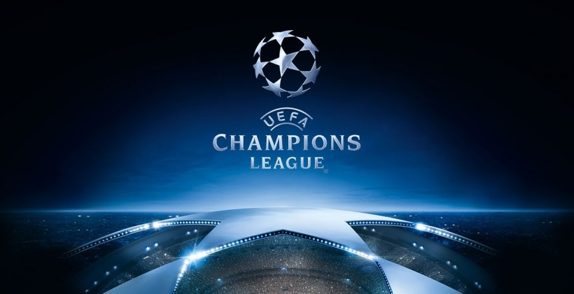
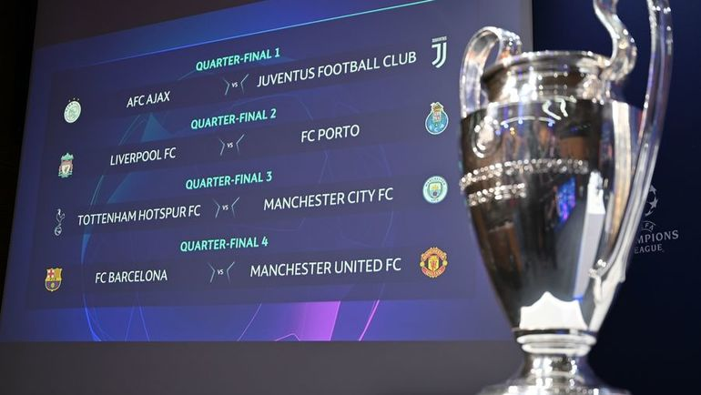
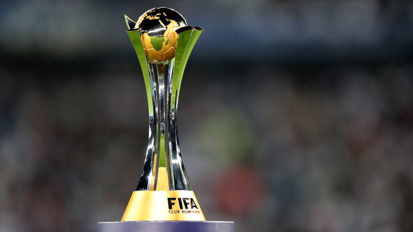

Кубок европейских чемпионов был основан в 1955 году по предложению французского спортивного журналиста и редактора «L’Équipe» Габриэля Ано. Идея о континентальном футбольном турнире посетила Ано после заявлений английской прессы о том, что «Вулверхэмптон Уондерерс», победивший осенью 1954 года «Спартак» и «Гонвед», является сильнейшим клубом мира. В своей газете Ано ответил, что для выявления сильнейшего клуба нужно провести соревнование, включающее в себя и домашние, и гостевые матчи. Уже на следующий день Ано опубликовал возможный проект турнира, а в январе 1955 года прошёл первый Кубок европейских чемпионов.

Первый розыгрыш Кубка 1955/56 был турниром на выбывание, где каждый раунд игрался в два матча (дома и в гостях). До 1992 года в розыгрыше участвовали чемпионы стран и последний обладатель Кубка европейских чемпионов. Начиная с сезона 1991/92, формат турнира был изменён, в него был включён групповой раунд, а в следующем году турнир сменил название, став Лигой чемпионов. Далее последовало несколько изменений в количестве квалификационных этапов, структуре групп. В сезоне 1997/98 в турнире стали участвовать команды, занявшие вторые места в ряде стран (в соответствии с таблицей коэффициентов УЕФА). Система квалификационных раундов была перестроена так, чтобы чемпионы стран с низким коэффициентом могли принять участие в одном или нескольких квалификационных этапах до начала группового этапа, а команды из стран с высоким коэффициентом вступали бы в борьбу позже.

В период с 1960 по 2004 год обладатель Кубка европейских чемпионов участвовал в ныне отменённом Межконтинентальном кубке против обладателя южноамериканского Кубка Либертадорес. Сейчас победитель Лиги чемпионов участвует в Клубном чемпионате мира — турнире под эгидой ФИФА. В настоящий момент страны с наивысшим коэффициентом представляются в Лиге чемпионов четырьмя клубами.
